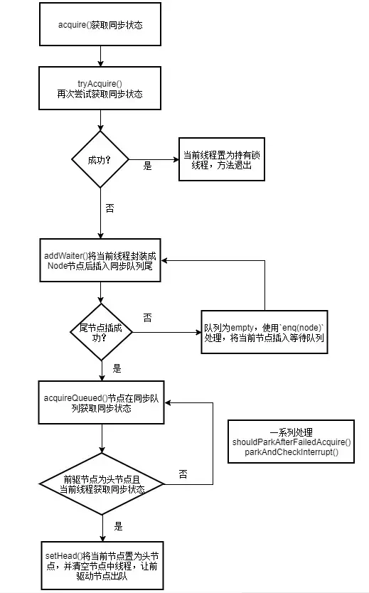
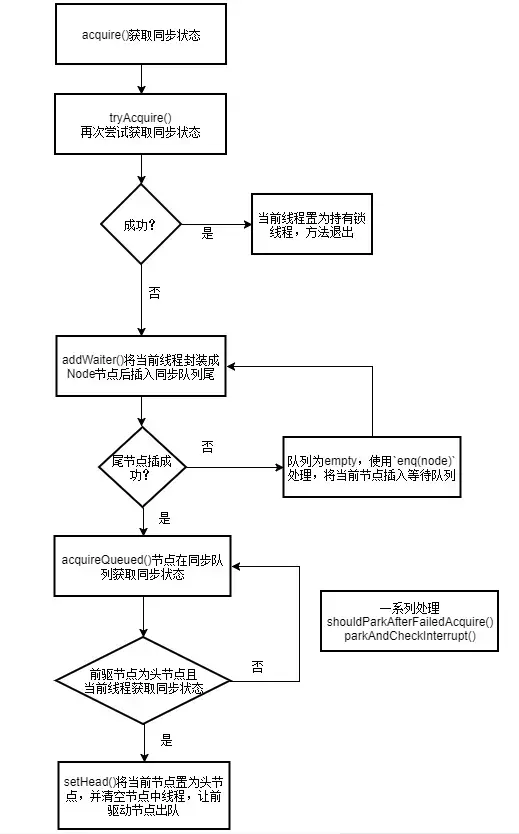
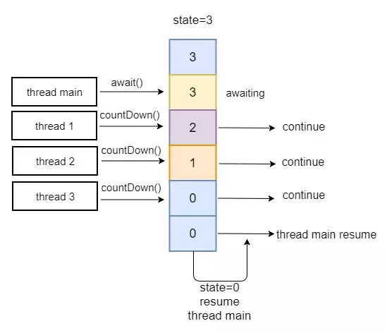
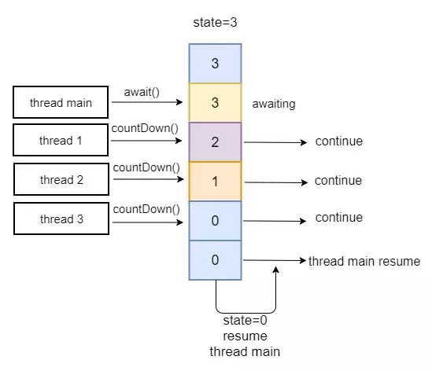

锁分类 #
轻量级锁 #


- Displaced Mark Word(置换标记字)
线程在执行同步块之前,JVM会先在当前线程的栈帧中创建用于存储记录的空间,并将对象头中的Mark Word复制到锁记录中,官方称为Displaced Mark Word 。然后线程尝试使用CAS将对象头中的Mark Word替换为指向锁记录的指针。如果成功,当前线程获得锁,如果失败,表示其他线程竞争锁,当前线程便尝试 使用自旋来获取锁。
白话 #
在进入同步块之前JVM会在当前线程的"栈帧中申请并创建锁记录的空间,接着把对象头的标识符写到锁记录中"
然后使用CAS将当前线程的锁记录的地址(指针)替换掉锁对应的对象中的标识符,CAS操作成功表示获得锁CAS
操作失败尝试使用自旋(就是在当前进程并且执行代码块的线程内的时间片下空循环烧CPU反正现代计算机大多都是多核处理器在短时间内不会太影响其他任务处理)来获取锁
锁的撤销 #
要想撤销轻量级锁(解锁) 对象头中标识符必须设回为Displaced Mark Word
因此使用CAS操作将Displaced Mark Word替换回到对象头里面,成功那么撤销成功,失败说明有其它线程还在竞争此对象的锁这个时候
锁就会立即膨胀成重量级锁,后续的加锁和解锁都按照重量级锁的操作来
偏向锁 #


当一个线程访问同步块(部分文档和解释说也包括同步方法)并获取锁时,会在对象头和栈帧中的锁记录里存在存储偏向锁的线程ID, 以后该线程在进入和退出同步块时不需要进行CAS操作来加锁和解锁,只需要简单测试一下对象头的Mark Word里是否存储着指向当前线程的偏向锁 .如果测试成功,表示已经获取到了锁。如果测试失败,则需要再测试一下Mark word中偏向锁的标识符是否设置成1:如果没有设置,则使用CAS竞争锁; 如果设置了,则尝试使用CAS将对象头的偏向锁指向当前线程(实际就是在对象头锁记录存入线程标识的数据,当然顺带栈帧记录也得存入有关的锁记录数据)
白话 #
当只有一个线程或者多个线程中最先执行到同步块的时候 这个时候测试完没有偏向锁立即设置完对应的标识记录和锁记录就开始执行同步代码了,
假如下次再进入并且锁没有升级那么仅仅简单测试通过又继续执行了 在这最开始到结束全程没有各种加锁操作甚至连CAS都很有可能没有(是有可能有CASC操作的这涉及到偏向锁的撤销机制)
相比同步操作消耗很少 因此很划算的
当有多个线程竞争锁的时候 这个时候系统检测到了并且达到了锁升级的约束条件那么就会立即执行升级操作即便获得执行条件正在的线程
(当然必须等执行线程中的某个原子操作或者若干原子操作组成的原语)也要对锁记录进行升级然后才开始升级
优点: 把整个同步都消除掉，连CAS操作都不去做了，优于轻量级锁
缺点: 如果程序中大多数的锁都总是被多个不同的线程访问，那偏向锁就是多余的
-
偏向锁是JDK6时加入的一种锁优化机制
-
锁的撤销
偏向锁使用了一种等到竞争出现才释放锁的机制,所以当其他线程尝试竞争偏向锁时,持有偏向锁的线程才会释放锁。偏向锁的撤销,
需要等待全局安全点(在这个时间点上没有正在执行的字节码)。它会首先暂停拥有偏向锁的线程,然后检查持有偏向锁的线程是否活着,
如果线程不处于活动状态,则将对象头设置成无锁状态;如果线程仍然活着,拥有偏向锁的栈会被执行,遍历偏向对象的锁记录,
栈中的锁记录和对象头的mark word要么重新偏向于其它线程,要么恢复到无锁或者标记对象不适合作为偏向锁,最后唤醒暂停的线程。
- 关闭锁
可以考虑通过JVM参数关闭偏向锁
-XX:-UseBiasedLocking=false
重量级锁 #


- 重量级锁是一种称谓
synchronized是通过对象内部的一个叫做监视器锁
（monitor）来实现的，监视器锁本身依赖底层的操作系统的 Mutex Lock来实现。操
作系统实现线程的切换需要从用户态切换到核心态，成本非常高。这种依赖于操作系
统 Mutex Lock来实现的锁称为重量级锁。为了优化synchonized，引入了轻量级锁，
偏向锁
- Java中的重量级锁： synchronized
自旋锁 || 适应性自旋锁 #


自旋是一种技术理念,使线程忙等待,只需要让线程执行一个忙循环(自旋)。 现在绝大多数的计算机都是多核处理器,如果物理机器有一个以上的处理器或者处理器核心, 能让两个或以上的线程同时并行执行,就可以让后面请求锁的那个线程"稍等一会", 但不放弃处理器的执行时间,看看持有锁的线程是否很快就会释放锁。
- 自旋锁的优点
避免了线程切换的开销。挂起线程和恢复线程的操作都需要转入内核
态中完成，这些操作给Java虚拟机的并发性能带来了很大的压力。
- 自旋锁的缺点
占用处理器的时间，如果占用的时间很长，会白白消耗处理器资源，
而不会做任何有价值的工作，带来性能的浪费。因此自旋等待的时间必须有一定的限
度，如果自旋超过了限定的次数仍然没有成功获得锁，就应当使用传统的方式去挂起
线程。
- 自旋次数默认值
0次，可以使用参数-XX:PreBlockSpin来自行更改。
- 自适应自旋
自适应意味着自旋的时间不再是固定的，而是由前一次在同一个锁上的
自旋时间及锁的拥有者的状态来决定的。有了自适应自旋，随着程序运行时间的增长
及性能监控信息的不断完善，虚拟机对程序锁的状态预测就会越来越精准。
- Java中的自旋锁： CAS操作中的比较操作失败后的自旋等待。
悲观锁 #


悲观锁是一种悲观思想，即认为写多读少，遇到并发写的可能性高，每次去拿数据的时候都认为其他线程会修改，所以每次读写数据都会认为其他线程会修改，所以每次读写数据时都会上锁。其他线程想要读写这个数据时，会被这个线程block，直到这个线程释放锁然后其他线程获取到锁。
白话 #
首先主观判断是需要写的操作高于读操作，因为你经常去写 假如你使用乐观锁那样烧cpu的方式进行那么非常浪费资源(计算机世界中CPU也是资源,甚至时间都是),
然后线程申请锁的时候要么被阻塞要么拿到锁(加锁成功) 拿到锁的继续执行没拿到的立即阻塞进入阻塞队列中等待 等待唤醒的时机
最后说下 悲观锁中如果存在数据库操作不管你是关系数据库,非关系数据库或者NOSQL这些 要小心数据处理的操作 特别是多个服务器对应到一个数据库或者多个服务器对应多个数据库等
要么你的数据处理在某个时刻只会运行在一台服务器上要么数据运行到多台服务器的时候在某个唯一服务器上进行唯一运行检验
实现例子 #
- 关系型数据库锁机制
行锁、表锁、读锁、写锁
- Java 里面的同步 synchronized 关键字的实现
乐观锁 #


乐观锁是一种乐观思想，假定当前环境是读多写少，遇到并发写的概率比较低，读数据时认为别的线程不会正在进行修改（所以没有上锁）。写数据时，判断当前 与期望值是否相同，如果相同则进行更新（更新期间加锁，保证是原子性的）
白话 #
当以这种模式运行时 我们预估大多数都能够实现 那么就以烧CPU轮询方式进行
在 当前运行的进程内的并且运行的线程一直轮询 只要不被阻塞或者其他什么引起线程不执行了就一直轮训知道成功为止
稍微提一下 必须满足运行的当前进程被操作系统调度进入CPU运行 因为操作系统内核对所有进程有一套调度算法一个进程正在执行中即便没有执行完也有可能被暂停,如时间片已经用完
实现例子 #
- CAS 实现
Java 中java.util.concurrent.atomic包下面的原子变量使用了乐观锁的一种 CAS 实现方式
CAS，比较并替换，比较当前值（主内存中的值），与预期值（当前线程中的值，主内存中值的一份拷贝）是否一样，一样则更新，否则继续进行CAS操作
- 版本号控制
般是在数据表中加上一个数据版本号 version 字段，表示数据被修改的次数。
当数据被修改时，version 值会 +1。当线程 A 要更新数据时，在读取数据的同时也会读取 version 值，
在提交更新时，若刚才读取到的 version 值与当前数据库中的 version 值相等时才更新，否则重试更新操作，直到更新成功
互斥锁 #


互斥锁与悲观锁、独占锁同义，表示某个资源只能被一个线程访问，其他线程不能访问
- 读-读互斥
- 读-写互斥
- 写-读互斥
- 写-写互斥
公平锁 #


公平锁是一种思想： 多个线程按照申请锁的顺序来获取锁。在并发环境中，每个线程 会先查看此锁维护的等待队列，如果当前等待队列为空，则占有锁，如果等待队列不 为空，则加入到等待队列的末尾，按照FIFO的原则从队列中拿到线程，然后占有锁。
非公平锁 #


非公平锁是一种思想： 线程尝试获取锁，如果获取不到，则再采用公平锁的方式。多 个线程获取锁的顺序，不是按照先到先得的顺序，有可能后申请锁的线程比先申请的 线程优先获取锁。
- 优点： 非公平锁的性能高于公平锁。
- 缺点： 有可能造成线程饥饿（某个线程很长一段时间获取不到锁）
- Java中的非公平锁：synchronized是非公平锁，ReentrantLock通过构造函数指定该锁是公平的还是非公平的，默认是非公平的。
分段锁 #


分段锁是一种机制： 最好的例子来说明分段锁是ConcurrentHashMap。
- ConcurrentHashMap原理
它内部细分了若干个小的 HashMap，称之为段
(Segment)。 默认情况下一个 ConcurrentHashMap 被进一步细分为 16 个段，既
就是锁的并发度。如果需要在 ConcurrentHashMap 添加一项key-value，并不是将
整个 HashMap 加锁，而是首先根据 hashcode 得到该key-value应该存放在哪个段
中，然后对该段加锁，并完成 put 操作。在多线程环境中，如果多个线程同时进行
put操作，只要被加入的key-value不存放在同一个段中，则线程间可以做到真正的并
行。
- 线程安全
：ConcurrentHashMap 是一个 Segment 数组， Segment 通过继承
ReentrantLock 来进行加锁，所以每次需要加锁的操作锁住的是一个 segment，这
样只要保证每个 Segment 是线程安全的，也就实现了全局的线程安全
读写锁 #
- 读写锁是一种技术
通过ReentrantReadWriteLock类来实现。为了提高性能， Java
提供了读写锁，在读的地方使用读锁，在写的地方使用写锁，灵活控制，如果没有写
锁的情况下，读是无阻塞的，在一定程度上提高了程序的执行效率。 读写锁分为读锁
和写锁，多个读锁不互斥，读锁与写锁互斥，这是由 jvm 自己控制的
读锁 #
- 允许多个线程获取读锁，同时访问同一个资源


写锁 #
- 只允许一个线程获取写锁，不允许同时访问同一个资源


- 如何使用
/* 创建一个读写锁* 它是一个读写融为一体的锁，在使用的时候，需要转换*/
private ReentrantReadWriteLock rwLock = new ReentrantReadWriteLock();
/*获取读锁和释放读锁*/
//获取读锁
rwLock.readLock().lock();
// 释放读锁
rwLock.readLock().unlock();
/*获取写锁和释放写锁*/
//创建一个写锁
rwLock.writeLock().lock();
//写锁 释放
rwLock.writeLock().unlock();
共享锁 #


-
共享锁是一种思想： 可以有多个线程获取读锁，以共享的方式持有锁。和乐观锁、读写锁同义。
-
Java中用到的共享锁：ReentrantReadWriteLock(读锁)
独占锁 #


-
独占锁是一种思想： 只能有一个线程获取锁，以独占的方式持有锁。和悲观锁、互斥锁同义
-
Java中用到的独占锁： synchronized，ReentrantLock
同步锁 #


-
同步锁与互斥锁同义，表示并发执行的多个线程，在同一时间内只允许一个线程访问共享数据
-
Java中的同步锁： synchronized
死锁 #


- 死锁是一种现象
如线程A持有资源x，线程B持有资源y，线程A等待线程B释放资源y，线程B等待线程A释放资源x，两个线程都不释放自己持有的资源，则两个线程都获取不到对方的资源，就会造成死锁
Java中的死锁不能自行打破，所以线程死锁后，线程不能进行响应。所以一定要注意程序的并发场景，避免造成死锁
锁粗化 #


- 锁粗化是一种优化技术
如果一系列的连续操作都对同一个对象反复加锁和解锁，甚
至加锁操作都是出现在循环体体之中，就算真的没有线程竞争，频繁地进行互斥同步
操作将会导致不必要的性能损耗，所以就采取了一种方案：把加锁的范围扩展（粗
化）到整个操作序列的外部，这样加锁解锁的频率就会大大降低，从而减少了性能损
耗。
锁消除 #


- 锁消除是一种优化技术
就是把锁干掉。当Java虚拟机运行时发现有些共享数据不会
被线程竞争时就可以进行锁消除。
那如何判断共享数据不会被线程竞争？
利用逃逸分析技术：分析对象的作用域，如果对象在A方法中定义后，被作为参数传递
到B方法中，则称为方法逃逸；如果被其他线程访问，则称为线程逃逸。
在堆上的某个数据不会逃逸出去被其他线程访问到，就可以把它当作栈上数据对待，
认为它是线程私有的，同步加锁就不需要了
获取锁的某些方式 #
仅仅是加锁过程中一个或者一些操作
CAS #
- lock cmpxchgq (比较并交换指令)
- java调用链 普通api => java Unsafe => native cpp => 操作系统指令
- 这里要注意即使是c++也不是真正底层 实际是通过操作系统执行中央处理器并做一些处理后得到的结果
CAS，即Compare and Swap，是基于硬件级别的指令实现的同步原语，Java并发包java.utile.concurrent许多同步类基于CAS构建，因此可见CAS的重要性；
处理器（包括 Intel 和 Sparc 处理器）使用的最通用的方法是实现名为比较并转换或CAS的原语，在 Intel 处理器中，
比较并交换通过指令的 cmpxchg系列实现。CAS 操作包含三个操作数 —— 内存位置（V）、预期原值（A）和新值(B)。
如果内存位置的值V与预期原值A相匹配，那么处理器会自动将该位置值V更新为新值B，否则，处理器不做任何操作，整个操作保证了原子性，即在对比V==A后、
设置V=B之前不会有其他线程修改V的值。
- Unsafe提供CAS操作的native方法
/** 拿对象o在内存偏移offset处的对象与expected比较，如果相等，则设置o.offset=x并返回true，否则返回false */
public final native boolean compareAndSwapObject(Object o, long offset, Object expected, Object x);
/** 拿对象o在内存偏移offset处的long值与expected比较，如果相等则设置o.offset=x */
public final native boolean compareAndSwapLong(Object o, long offset, long expected, long x);
/** 拿对象o在内存偏移offset处的int值与expected比较，如果相等则设置o.offset=x */
public final native boolean compareAndSwapInt(Object o, long offset, int expected, int x);
/** 获取字段f的偏移量 */
public native long objectFieldOffset(Field f);
/** 获取静态field在对象中的偏移量 */
public native long staticFieldOffset(Field f);
-
例子1
-
AbstractQueuedSynchronizer类中用到CAS实现state值的更新
long stateOffset = unsafe.objectFieldOffset
(AbstractQueuedSynchronizer.class.getDeclaredField("state"));
// CAS方式修改state字段的值
protected final boolean compareAndSetState(int expect, int update) {
return unsafe.compareAndSwapInt(this, stateOffset, expect, update);
}
- Unsafe提供给atomic原子类调用的方法
public final int getAndAddInt(Object o, long offset, int delta) {
int v;
do {
// 获取内存中的值
v = getIntVolatile(o, offset);
} while (!compareAndSwapInt(o, offset, v, v + delta));
return v;
}
public final long getAndAddLong(Object o, long offset, long delta)
public final int getAndSetInt(Object o, long offset, int newValue)
public final long getAndSetLong(Object o, long offset, long newValue)
public final Object getAndSetObject(Object o, long offset, Object newValue)
此外，Unsafe类还基于这几个native方法封装了几个给atomic原子类调用的方法：
拿getAndAddInt分析，首先取内存中的值，然后执行CAS操作，如果成功则返回修改前的值；
如果取完内存值后执行CAS失败，比如被其他线程修改了值，则重新取内存中的值，继续CAS，直到成功，
如果竞争比较激烈，可能会循环次数过多；这里可以引申出乐观锁悲观锁的含义，
比如某个线程要对变量进行add操作，悲观锁认为期间一定会有其他线程修改变量，于是会在整个修改期间加锁，比如synchronized；
而乐观锁认为不会有其他线程修改变量，getAndAddInt正是乐观锁，用CAS代替锁，如果出现竞争，则用自旋的方式等待；
- CAS在原子类中的应用—AtomicInteger为例
// AtomicInteger可以理解为在并发场景下基于CAS乐观锁实现了int共享变量更新的线程安全，常见方法如下
public final int getAndSet(int newValue) {
return unsafe.getAndSetInt(this, valueOffset, newValue);
}
public final boolean compareAndSet(int expect, int update) {
return unsafe.compareAndSwapInt(this, valueOffset, expect, update);
}
public final int getAndIncrement() {
return unsafe.getAndAddInt(this, valueOffset, 1);
}
public final int getAndDecrement() {
return unsafe.getAndAddInt(this, valueOffset, -1);
}
- CAS存在的问题
-
1:效率问题：前面提到，如果存在多个线程竞争，可能导致CAS失败，此时可能需要循环（自旋）执行CAS，竞争激烈情况下会对性能有一定影响；
-
2:ABA问题：CAS过程中其他线程把变量从A改成B，然后又改回A，CAS判断值没变于是执行更新操作，但事实上值是被修改了的，与设计原语不符，atomic包引入AtomicStampReference类解决ABA问题，每次变量更新的时候，将变量的版本号+1，之前的ABA问题中，变量经过两次操作以后，变量的版本号就会由1变成3，也就是说只要线程对变量进行过操作，变量的版本号就会发生更改，从而解决了ABA问题；但实际应用中ABA问题如果对业务逻辑不会造成影响，可以忽略
AQS #
AQS全称AbstractQueuedSynchronizer，即抽象的队列同步器，是一种用来构建锁和同步器的框架
基于AQS构建同步器 #
- ReentrantLock
- Semaphore
- CountDownLatch
- ReentrantReadWriteLock
- SynchronusQueue
- FutureTask
优势 #
- AQS 解决了在实现同步器时涉及的大量细节问题，例如自定义标准同步状态、FIFO 同步队列。
- 基于AQS来构建同步器可以带来很多好处。它不仅能够极大地减少实现工作，而且也不必处理在多个位置上发生的竞争问题。
AQS核心知识 #
AQS核心思想 #


如果被请求的共享资源空闲，则将当前请求资源的线程设置为有效的工作线程，并且将共享资源设置为锁定状态。
如果被请求的共享资源被占用，那么就需要一套线程阻塞等待以及被唤醒时锁分配的机制，
这个机制AQS是用CLH队列锁实现的，即将暂时获取不到锁的线程加入到队列中。如图所示
- Sync queue： 同步队列，是一个双向列表。包括head节点和tail节点。head节点主要用作后续的调度


- Condition queue： 非必须，单向列表。当程序中存在cindition的时候才会存在此列表


AQS设计思想 #
- 1:AQS使用一个int成员变量来表示同步状态
- 2:使用Node实现FIFO队列，可以用于构建锁或者其他同步装置
- 3:AQS资源共享方式：独占Exclusive（排它锁模式）和共享Share（共享锁模式）
AQS它的所有子类中，要么实现并使用了它的独占功能的api，要么使用了共享锁的功能，而不会同时使用两套api，即便是最有名的子类ReentrantReadWriteLock也是通过两个内部类读锁和写锁分别实现了两套api来实现的
state状态 #
-
state状态使用volatile int类型的变量，表示当前同步状态。state的访问方式有三种
-
getState()
-
setState()
-
compareAndSetState()
AQS中Node常量含义 #
- CANCELLED
waitStatus值为1时表示该线程节点已释放（超时、中断），已取消的节点不会再阻塞
- SIGNAL
waitStatus为-1时表示该线程的后续线程需要阻塞，即只要前置节点释放锁，就会通知标识为 SIGNAL 状态的后续节点的线程
- CONDITION
waitStatus为-2时，表示该线程在condition队列中阻塞（Condition有使用）
- PROPAGATE
waitStatus为-3时，表示该线程以及后续线程进行无条件传播（CountDownLatch中有使用）共享模式下， PROPAGATE 状态的线程处于可运行状态
- 同步队列为什么称为FIFO呢？
因为只有前驱节点是head节点的节点才能被首先唤醒去进行同步状态的获取。当该节点获取到同步状态时，它会清除自己的值，将自己作为head节点，以便唤醒下一个节点
- Condition队列 (单向队列)
Condition队列也是FIFO。调用ConditionObject.signal()方法，能够唤醒firstWaiter节点，将其添加到同步队列末尾
除了同步队列之外，AQS中还存在Condition队列，这是一个单向队列。调用ConditionObject.await()方法，
能够将当前线程封装成Node加入到Condition队列的末尾，然后将获取的同步状态释放（即修改同步状态的值，唤醒在同步队列中的线程）
- 自定义同步器的实现
在构建自定义同步器时，只需要依赖AQS底层再实现共享资源state的获取与释放操作即可。自定义同步器实现时主要实现以下几种方法：
- isHeldExclusively()：该线程是否正在独占资源。只有用到condition才需要去实现它。
- tryAcquire(int)：独占方式。尝试获取资源，成功则返回true，失败则返回false。
- tryRelease(int)：独占方式。尝试释放资源，成功则返回true，失败则返回false。
- tryAcquireShared(int)：共享方式。尝试获取资源。负数表示失败；0表示成功，但没有剩余可用资源；正数表示成功，且有剩余资源。
- tryReleaseShared(int)：共享方式。尝试释放资源，如果释放后允许唤醒后续等待结点返回true，否则返回false
AQS实现细节 #
线程首先尝试获取锁，如果失败就将当前线程及等待状态等信息包装成一个node节点加入到FIFO队列中。 接着会不断的循环尝试获取锁，条件是当前节点为head的直接后继才会尝试。如果失败就会阻塞自己直到自己被唤醒。而当持有锁的线程释放锁的时候，会唤醒队列中的后继线程。
独占模式下的AQS #
- 所谓独占模式，即只允许一个线程获取同步状态，当这个线程还没有释放同步状态时，其他线程是获取不了的，只能加入到同步队列，进行等待
很明显，我们可以将state的初始值设为0，表示空闲。当一个线程获取到同步状态时，利用CAS操作让state加1，表示非空闲，那么其他线程就只能等待了。释放同步状态时，不需要CAS操作，因为独占模式下只有一个线程能获取到同步状态。ReentrantLock、CyclicBarrier正是基于此设计的
- 例如,ReentrantLock，state初始化为0，表示未锁定状态。A线程lock()时，会调用tryAcquire()独占该锁并将state+1


-
独占模式下的AQS是不响应中断的，指的是加入到同步队列中的线程，如果因为中断而被唤醒的话，不会立即返回，并且抛出InterruptedException。而是再次去判断其前驱节点是否为head节点，决定是否争抢同步状态。如果其前驱节点不是head节点或者争抢同步状态失败，那么再次挂起
-
独占模式获取资源-acquire方法
-
acquire以独占exclusive方式获取资源。如果获取到资源，线程直接返回，否则进入等待队列，直到获取到资源为止，且整个过程忽略中断的影响。源码如下
public final void acquire(int arg) {
if (!tryAcquire(arg) &&
acquireQueued(addWaiter(Node.EXCLUSIVE), arg))
selfInterrupt();
}
- 流程图
 

-
调用自定义同步器的tryAcquire()尝试直接去获取资源，如果成功则直接返回；
-
没成功，则addWaiter()将该线程加入等待队列的尾部，并标记为独占模式；
-
acquireQueued()使线程在等待队列中休息，有机会时（轮到自己，会被unpark()）会去尝试获取资源。获取到资源后才返回。如果在整个等待过程中被中断过，则返回true，否则返回false。
-
如果线程在等待过程中被中断过，它是不响应的。只是获取资源后才再进行自我中断selfInterrupt()，将中断补上
-
独占模式获取资源-tryAcquire方法
-
tryAcquire尝试以独占的方式获取资源，如果获取成功，则直接返回true，否则直接返回false，且具体实现由自定义AQS的同步器实现的
protected boolean tryAcquire(int arg) {
throw new UnsupportedOperationException();
}
-
独占模式获取资源-addWaiter方法
-
根据不同模式(Node.EXCLUSIVE互斥模式、Node.SHARED共享模式)创建结点并以CAS的方式将当前线程节点加入到不为空的等待队列的末尾(通过compareAndSetTail()方法)。如果队列为空，通过enq(node)方法初始化一个等待队列，并返回当前节点
/**
* 参数
* @param mode Node.EXCLUSIVE for exclusive, Node.SHARED for shared
* 返回值
* @return the new node
*/
private Node addWaiter(Node mode) {
//将当前线程以指定的模式创建节点node
Node node = new Node(Thread.currentThread(), mode);
// Try the fast path of enq; backup to full enq on failure
// 获取当前同队列的尾节点
Node pred = tail;
//队列不为空，将新的node加入等待队列中
if (pred != null) {
node.prev = pred;
//CAS方式将当前节点尾插入队列中
if (compareAndSetTail(pred, node)) {
pred.next = node;
return node;
}
}
//当队列为empty或者CAS失败时会调用enq方法处理
enq(node);
return node;
}
- 其中，队列为empty，使用enq(node)处理，将当前节点插入等待队列，如果队列为空，则初始化当前队列。所有操作都是CAS自旋的方式进行，直到成功加入队尾为止
private Node enq(final Node node) {
//不断自旋
for (;;) {
Node t = tail;
//当前队列为empty
if (t == null) { // Must initialize
//完成队列初始化操作，头结点中不放数据，只是作为起始标记，lazy-load，在第一次用的时候new
if (compareAndSetHead(new Node()))
tail = head;
} else {
node.prev = t;
//不断将当前节点使用CAS尾插入队列中直到成功为止
if (compareAndSetTail(t, node)) {
t.next = node;
return t;
}
}
}
}
}
-
独占模式获取资源-acquireQueued方法
-
acquireQueued用于已在队列中的线程以独占且不间断模式获取state状态，直到获取锁后返回。主要流程:
-
结点node进入队列尾部后，检查状态；
-
调用park()进入waiting状态，等待unpark()或interrupt()唤醒；
final boolean acquireQueued ( final Node node, int arg)
{ //是否已获取锁的标志，默认为true 即为尚未
boolean failed = true;
try {
boolean interrupted = false;//等待中是否被中断过的标记
for (;;) {
final Node p = node.predecessor(); //获取前节点
// 如果当前节点已经成为头结点，尝试获取锁（tryAcquire）成功，然后返回 if (p == head && tryAcquire(arg)) { setHead(node); p.next = null;
help GC failed = false; return interrupted; }
shouldParkAfterFailedAcquire根据对当前节点的前一个节点的状态进行判断，对当前节点做出不同的操作
parkAndCheckInterrupt让线程进入等待状态，并检查当前线程是否被可以被中断
if (shouldParkAfterFailedAcquire(p, node) && parkAndCheckInterrupt()) interrupted = true; }
} finally { //将当前节点设置为取消状态；取消状态设置为1 if (failed) cancelAcquire(node); } }
}
-
独占模式释放资源-release方法
-
release方法是独占exclusive模式下线程释放共享资源的锁。它会调用tryRelease()释放同步资源，如果全部释放了同步状态为空闲（即state=0）,当同步状态为空闲时，它会唤醒等待队列里的其他线程来获取资源。这也正是unlock()的语义，当然不仅仅只限于unlock()
public final boolean release(int arg) {
if (tryRelease(arg)) {
Node h = head;
if (h != null && h.waitStatus != 0)
unparkSuccessor(h);
return true;
}
return false;
}
-
独占模式释放资源-tryRelease方法
-
tryRelease()跟tryAcquire()一样实现都是由自定义定时器以独占exclusive模式实现的。因为其是独占模式，不需要考虑线程安全的问题去释放共享资源，直接减掉相应量的资源即可(state-=arg)。而且tryRelease()的返回值代表着该线程是否已经完成资源的释放，因此在自定义同步器的tryRelease()时，需要明确这条件，当已经彻底释放资源(state=0)，要返回true，否则返回false
protected boolean tryRelease(int arg) {
throw new UnsupportedOperationException();
}
- ReentrantReadWriteLock的实现
protected final boolean tryRelease(int releases) {
if (!isHeldExclusively())
throw new IllegalMonitorStateException();
//减掉相应量的资源(state-=arg)
int nextc = getState() - releases;
//是否完全释放资源
boolean free = exclusiveCount(nextc) == 0;
if (free)
setExclusiveOwnerThread(null);
setState(nextc);
return free;
}
-
独占模式释放资源-unparkSuccessor
-
unparkSuccessor用unpark()唤醒等待队列中最前驱的那个未放弃线程，此线程并不一定是当前节点的next节点，而是下一个可以用来唤醒的线程，如果这个节点存在，调用unpark()方法唤醒
private void unparkSuccessor(Node node) {
//当前线程所在的结点node
int ws = node.waitStatus;
//置零当前线程所在的结点状态，允许失败
if (ws < 0)
compareAndSetWaitStatus(node, ws, 0);
//找到下一个需要唤醒的结点
Node s = node.next;
if (s == null || s.waitStatus > 0) {
s = null;
// 从后向前找
for (Node t = tail; t != null && t != node; t = t.prev)
//从这里可以看出，<=0的结点，都是还有效的结点
if (t.waitStatus <= 0)
s = t;
}
if (s != null)
//唤醒
LockSupport.unpark(s.thread);
}
-
共享模式下的AQS
-
共享模式，当然是允许多个线程同时获取到同步状态,共享模式下的AQS也是不响应中断的
很明显，我们可以将state的初始值设为N（N > 0），表示空闲。每当一个线程获取到同步状态时，就利用CAS操作让state减1，直到减到0表示非空闲，其他线程就只能加入到同步队列，进行等待。释放同步状态时，需要CAS操作，因为共享模式下，有多个线程能获取到同步状态。CountDownLatch、Semaphore正是基于此设计的
- 例如，CountDownLatch，任务分为N个子线程去执行，同步状态state也初始化为N（注意N要与线程个数一致）:
 

-
共享模式获取资源-acquireShared方法
-
acquireShared在共享模式下线程获取共享资源的顶层入口。它会获取指定量的资源，获取成功则直接返回，获取失败则进入等待队列，直到获取到资源为止，整个过程忽略中断
public final void acquireShared(int arg) {
if (tryAcquireShared(arg) < 0)
doAcquireShared(arg);
}
-
流程：
-
先通过tryAcquireShared()尝试获取资源，成功则直接返回；
-
失败则通过doAcquireShared()中的park()进入等待队列，直到被unpark()/interrupt()并成功获取到资源才返回(整个等待过程也是忽略中断响应)。
-
共享模式获取资源-tryAcquireShared方法
-
tryAcquireShared()跟独占模式获取资源方法一样实现都是由自定义同步器去实现。但AQS规范中已定义好tryAcquireShared()的返回值：
- 负值代表获取失败；
- 0代表获取成功，但没有剩余资源；
- 正数表示获取成功，还有剩余资源，其他线程还可以去获取。
protected int tryAcquireShared(int arg) {
throw new UnsupportedOperationException();
}
-
共享模式获取资源-doAcquireShared方法
-
doAcquireShared()用于将当前线程加入等待队列尾部休息，直到其他线程释放资源唤醒自己，自己成功拿到相应量的资源后才返回
private void doAcquireShared(int arg) {
//加入队列尾部
final Node node = addWaiter(Node.SHARED);
//是否成功标志
boolean failed = true;
try {
//等待过程中是否被中断过的标志
boolean interrupted = false;
for (;;) {
final Node p = node.predecessor();//获取前驱节点
if (p == head) {//如果到head的下一个，因为head是拿到资源的线程，此时node被唤醒，很可能是head用完资源来唤醒自己的
int r = tryAcquireShared(arg);//尝试获取资源
if (r >= 0) {//成功
setHeadAndPropagate(node, r);//将head指向自己，还有剩余资源可以再唤醒之后的线程
p.next = null; // help GC
if (interrupted)//如果等待过程中被打断过，此时将中断补上。
selfInterrupt();
failed = false;
return;
}
}
//判断状态，队列寻找一个适合位置，进入waiting状态，等着被unpark()或interrupt()
if (shouldParkAfterFailedAcquire(p, node) &&
parkAndCheckInterrupt())
interrupted = true;
}
} finally {
if (failed)
cancelAcquire(node);
}
}
-
共享模式释放资源-releaseShared方法
-
releaseShared()用于共享模式下线程释放共享资源，释放指定量的资源，如果成功释放且允许唤醒等待线程，它会唤醒等待队列里的其他线程来获取资源
public final boolean releaseShared(int arg) {
//尝试释放资源
if (tryReleaseShared(arg)) {
//唤醒后继结点
doReleaseShared();
return true;
}
return false;
}
独占模式下的tryRelease()在完全释放掉资源（state=0）后，才会返回true去唤醒其他线程，这主要是基于独占下可重入的考量；而共享模式下的releaseShared()则没有这种要求，共享模式实质就是控制一定量的线程并发执行，那么拥有资源的线程在释放掉部分资源时就可以唤醒后继等待结点。
-
共享模式释放资源-doReleaseShared方法
-
doReleaseShared()主要用于唤醒后继节点线程,当state为正数，去获取剩余共享资源；当state=0时去获取共享资源
private void doReleaseShared() {
for (;;) {
Node h = head;
if (h != null && h != tail) {
int ws = h.waitStatus;
if (ws == Node.SIGNAL) {
if (!compareAndSetWaitStatus(h, Node.SIGNAL, 0))
continue;
//唤醒后继
unparkSuccessor(h);
}
else if (ws == 0 &&
!compareAndSetWaitStatus(h, 0, Node.PROPAGATE))
continue;
}
// head发生变化
if (h == head)
break;
}
}
其它 #
同步术语 #
-
volatile类型的变量
-
显示锁 Explicit Lock
-
原子变量
synchronized #


-
synchronized是Java中的关键字 用来修饰方法、对象实例。属于独占锁、悲观锁、 可重入锁、非公平锁。
-
1.作用于实例方法时，锁住的是对象的实例(this)；
-
2.当作用于静态方法时，锁住的是 Class类，相当于类的一个全局锁，会锁所有调用该方法的线程；
-
3.synchronized 作用于一个非 NULL的对象实例时，锁住的是所有以该对象为锁的代码块。 它有多个队列，当多个线程一起访问某个对象监视器的时候，对象监视器会将这些线程存储在不同的容器中。
-
每个对象都有个 monitor 对象， 加锁就是在竞争 monitor 对象，代码块加锁是在代码块前后分别加上 monitorenter 和 monitorexit 指令来实现的，方法加锁是通过一个标记位来判断的。
Lock和synchronized的区别 #
Lock： 是Java中的接口，可重入锁、悲观锁、独占锁、互斥锁、同步锁。 #
- 1.Lock需要手动获取锁和释放锁。就好比自动挡和手动挡的区别
- 2.Lock 是一个接口，而 synchronized 是 Java 中的关键字
- synchronized 是内置的语言实现。
- 3.synchronized 在发生异常时，会自动释放线程占有的锁，因此不会导致死锁现象发生；而 Lock 在发生异常时，如果没有主动通过 unLock()去释放锁，则很可能造成死锁现象，因此使用 Lock 时需要在 finally 块中释放锁。
- 4.Lock 可以让等待锁的线程响应中断，而 synchronized 却不行，使用synchronized 时，等待的线程会一直等待下去，不能够响应中断。
- 5.通过 Lock 可以知道有没有成功获取锁，而 synchronized 却无法办到。
- 6.Lock 可以通过实现读写锁提高多个线程进行读操作的效率。
synchronized的优势： #
- 足够清晰简单，只需要基础的同步功能时，用synchronized。
- Lock应该确保在finally块中释放锁。如果使用synchronized，JVM确保即
- 使出现异常，锁也能被自动释放。
- 使用Lock时，Java虚拟机很难得知哪些锁对象是由特定线程锁持有的。
ReentrantLock 和synchronized的区别 #


- ReentrantLock是Java中的类 ： 继承了Lock类，可重入锁、悲观锁、独占锁、互斥锁、同步锁。
相同点 #
- 1.主要解决共享变量如何安全访问的问题
- 2.都是可重入锁，也叫做递归锁，同一线程可以多次获得同一个锁，
- 3.保证了线程安全的两大特性：可见性、原子性。
不同点 #
- 1.ReentrantLock 就像手动汽车，需要显示的调用lock和unlock方法，synchronized 隐式获得释放锁。
- 2.ReentrantLock 可响应中断， synchronized 是不可以响应中断的，ReentrantLock 为处理锁的不可用性提供了更高的灵活性
- 3.ReentrantLock 是 API 级别的， synchronized 是 JVM 级别的
- 4.ReentrantLock 可以实现公平锁、非公平锁，默认非公平锁，synchronized 是非公平锁，且不可更改。
- 5.ReentrantLock 通过 Condition 可以绑定多个条件